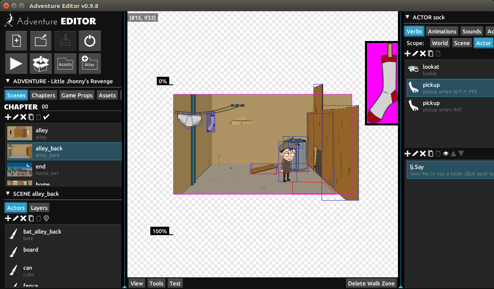
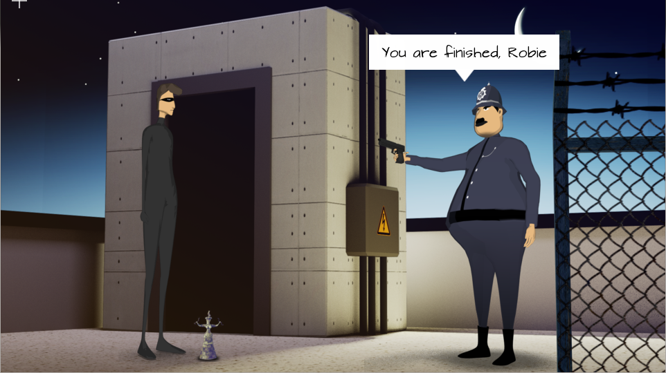
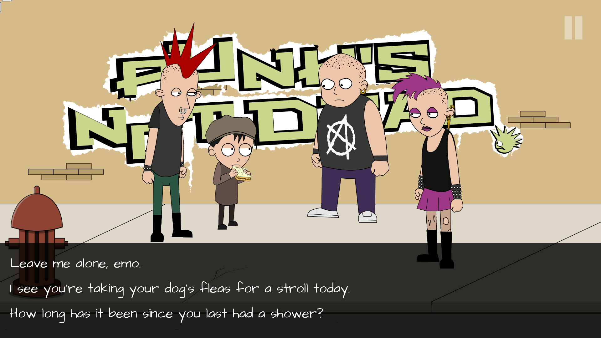
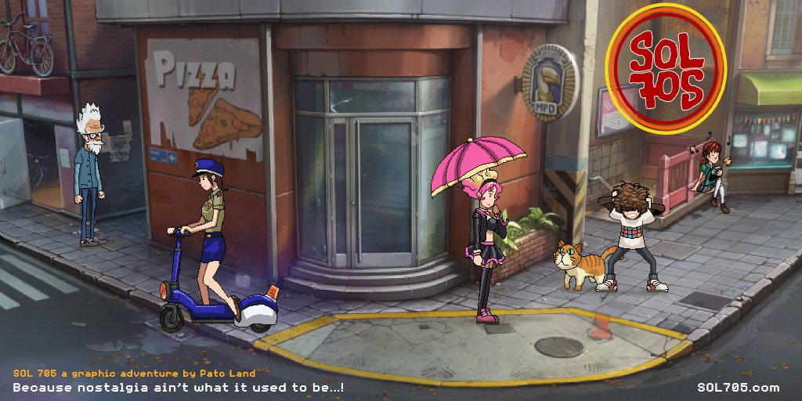

The Bladecoder Adventure Engine is a set of tools to create interactive graphic adventures (classical point and click games).
I think that this type of games are a great medium to tell stories and mobile devices provide a big opportunity to rebirth and evolve them.
By creating the Bladecoder Engine, I want to create a platform to tell stories. Interactive stories with modern graphics, animations and music.
The Bladecoder Adventure Engine is composed of the following subprojects:
- adventure-editor: the graphical editor for creating point and click games.
-
blade-engine: the engine to run the games created with
adventure-editor.
The Bladecoder Engine has been developed using the LibGDX framework and the project generates a layout similar to any LibGDX project. This lowers the learning curve and eases development and deploy on several platforms.
Adventure Editor
The Adventure Editor is a graphical editor to create full point and click games with minimal programming.

Blade Engine
The Bladecoder Engine has the following features:
- Multi platform support: Android, IOS and Desktop (Windows, OSX and Linux).
- Several animation techniques: sprite/atlas animation, Spine (cutout) animation and 3d model animation.
- Inkle Ink integration.
- Fast setup and prototyping, no programming needed.
- 3d character support.
- Multiresolution to deal with different densities and screen sizes.
- Multilanguage support.
The Goddess Robbery
The Bladecoder Engine is currently under continuous development. A stable version (v1.0) has been released some months ago. Several improvements has been added since then and development releases (1.2.x) are stable enough for production.
The Goddess Robbery is a test game created to show the features of the Engine.
The source of The Goddess Robbery can be downloaded here and it's useful to learn how to use the Adventure Editor.

The Goddess Robbery is also available for Android devices at the Google Play Store and for iOS devices at the Apple Store.

Games created with the Blade Engine
The Revenge of Johnny Bonasera
The first commercial adventure created with the Blade Engine by Rafael García. A hilarious and full featured adventure game! Available for Android, iOS and Steam at bladecoder.com/bonasera.
Sol705
Currently under development by Patricio Land. A demo will be released soon. More info at sol705.com.
License
The Bladecoder Adventure Engine is licensed under the Apache 2 License, meaning you can use it free of charge, without strings attached in commercial and non-commercial projects.